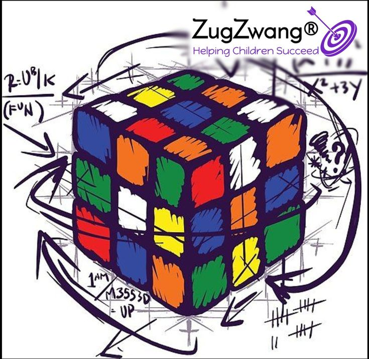

Speedcubing es la práctica de resolver un cubo de Rubik en el menor tiempo posible. Los speedcubers dedican horas de práctica para mejorar sus tiempos, utilizando diversas técnicas y algoritmos avanzados.
La comunidad de speedcubers es muy activa y se realizan competiciones en todo el mundo. ¿Te gustaría saber más? Visita la Asociación Mundial del Cubo para más información.
Los speedcubers utilizan varias técnicas avanzadas para resolver el cubo. Algunas de las más populares son:
Además de los métodos mencionados, los speedcubers suelen seguir estos consejos para mejorar:
El cubo de Rubik fue inventado en 1974 por Ernő Rubik, pero la práctica del speedcubing no ganó popularidad hasta la década de 1980. En 1982, se celebró el primer Campeonato Mundial de Cubo Rubik en Budapest, Hungría. Desde entonces, el speedcubing ha evolucionado significativamente.
Algunos hitos importantes en la historia del speedcubing incluyen: